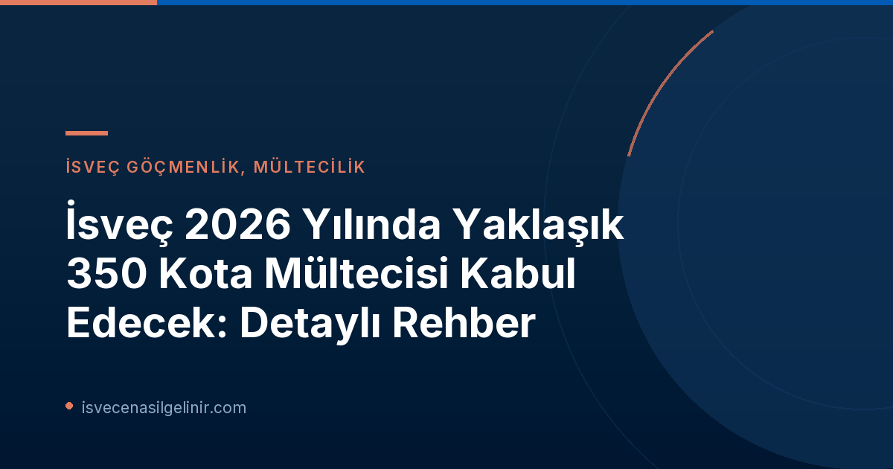

İsveç'in Kota Mültecisi Programına Genel Bakış
İsveç, her yıl hükümet ve Riksdag (parlamento) tarafından belirlenen kaynaklarla belirli sayıda kota mültecisi kabul etmektedir. Bu program, Birleşmiş Milletler Mülteciler Yüksek Komiserliği (UNHCR) tarafından belirlenen ve üçüncü bir ülkeye yerleştirilmesi gereken en savunmasız mültecilere yönelik uluslararası bir dayanışma mekanizmasıdır. Hükümet, kota alımlarının genel yönünü belirlerken, Migrationsverket UNHCR ile işbirliği içinde hangi mülteci gruplarının değerlendirileceğine karar verir. 2023 yılından bu yana İsveç hükümeti, yıllık 900 kota mültecisi kabul etme kararı almıştır.
2026 Yılı İçin Kota Mültecisi Kabulü Neden Düşük?
Bu yılki kota mültecisi kabul sayısının başlangıçtaki 900 kişilik hedefin altında kalmasının temel nedeni, hükümetin kota alımına yönelik kararının geç gelmesidir. Migrationsverket, yıllık 900 kişilik kotanın tamamını aktarabilmek için en geç Eylül ortasına kadar bir cevaba ihtiyaç duyduğunu belirtmişti. Kararın bu süreden sonra gelmesi, yıl sonuna kadar tüm kotanın aktarılması için pratik imkanları ortadan kaldırmıştır. Migrationsverket birim başkanı Johan Norman, hükümeti gerekli zaman çizelgeleri konusunda açıkça bilgilendirdiklerini ve şu anki odaklarının seçim süreçlerini mümkün olan en kısa sürede başlatmak olduğunu ifade etmiştir.
Kimler Öncelikli Olacak? 2026 Yılında Hedef Gruplar
Hükümetin aldığı son kararlar, 2026 yılındaki kota mültecisi alımında belirli gruplara öncelik verileceğini göstermektedir. Bu yılın alımı ağırlıklı olarak şu kişileri kapsayacaktır:
- Uganda'da bulunan Kongolu mülteciler.
- Türkiye'deki Afgan kadınlar ve kız çocukları (bu kategori sadece kadın ve kız çocuklarından oluşacaktır).
Genel olarak, LGBTQI+ bireyler gibi savunmasız gruplara öncelik tanınacaktır. Ayrıca, kota alımının yaklaşık üçte ikisinin kadın ve kız çocuklarından oluşması hedeflenmektedir. Bu öncelikler, İsveç'in uluslararası koruma altındaki en savunmasız kişilere odaklanma politikasının bir yansımasıdır.
Süreç Nasıl İşleyecek? Migrationsverket'in Çalışmaları
Migrationsverket, yıl boyunca kota mültecilerinin seçimi için hazırlık çalışmalarını sürdürmüştür. Bu çalışmalar kapsamında, UNHCR tarafından kuruma sunulan kişilerin dosyaları incelenmiştir. Ancak, hangi grupların ve hangi ülkelerden geleceğine dair hükümet kararının gecikmesi nedeniyle sürecin bazı aşamalarında ilerleme kaydedilememiştir. Johan Norman, bu aşamaların şimdi hızla tamamlanarak seçim süreçlerine başlanacağını belirtmiştir.
İsveç Kota Mültecisi Kabulü 2026 – Önemli Bilgiler
| Parametre | Detay |
|---|---|
| Yıllık Hedef Kota (2023'ten beri) | 900 kişi |
| 2026 Yılı Tahmini Kabul Sayısı | Yaklaşık 350 kişi |
| Migrationsverket'in İhtiyaç Duyduğu Son Tarih | Eylül ortası |
| Öncelikli Gruplar | Uganda'daki Kongolu mülteciler, Türkiye'deki Afgan kadın ve kız çocukları, LGBTQI+ bireyler |
| Kadın ve Kız Çocukları Oranı | Yaklaşık üçte iki (%66) |
İsveç'e yerleşme ve vatandaşlık süreçleri hakkında daha fazla bilgi edinmek için İsveç Vatandaşlık Testi sayfamızı ziyaret edebilirsiniz.
İsveç'te Vatandaşlık Yolu ve Ötesi
İsveç'e kota mültecisi olarak gelenler için süreç, ülkeye entegrasyon ve uzun vadede İsveç vatandaşlığı edinme potansiyelini barındırır. İsveç vatandaşlığı, belirli ikamet süresi, iyi hal ve İsveç toplumu hakkında bilgi birikimi gibi koşullara bağlıdır. Bu süreçte atılacak adımlar, yeni bir hayat kurmanın ve İsveç toplumunun aktif bir üyesi olmanın temelini oluşturur. Vatandaşlık testi, bu sürecin önemli bir parçası haline gelmiştir ve İsveç yaşamına dair bilgi düzeyini ölçmeyi amaçlar.
Referanslar:
- Migrationsverket: Cirka 350 kvotflyktingar kan överföras till Sverige i år (Dofollow)
- sverigemedborgarskapsprov.com (Dofollow)
İsveç'e Uyum Sağlamak ve Geleceğinizi İnşa Etmek
İsveç'e yerleşme sürecinizde merak ettiğiniz her konuda yanınızdayız. İsveç vatandaşlık sınavı hakkında detaylı bilgi almak ve kaynaklara ulaşmak için tıklayın.